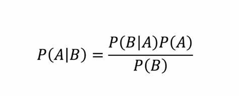

Naive Bayes is a machine learning algorithm based off of Bayes’ theorem. Bayes’ Theorem is a statistical concept that computes the probability of an event based on the occurence of a prior event. Bayes’ Theorem is calculated below:

The theorem states that the probability of an event A occurring given an event B occurred is equal to the probability event B occurs given event A occurred, multiplied by the probability event A occurs, and divided by the probability event B occurs. This allows us to conditionally update the probability of our goal event.
Naive Bayes assumes conditional independence between all features. Because of this assumption, the algorithm gets significantly simplified, reducing the necessary probability calculations. Despite it being less computationally complex than other tools, Naive Bayes is still an incredibly powerful algorithm and can be used to gain impressive results.
For my project’s sake, I hope to use Naive Bayes to get a better understanding of the fundamental relationships between the different features in my data. Hopefully, I can discover an optimal set of features that serve as a great classifier for both my tournament and Creighton text data.
Variants of Naive Bayes
Gaussian Naive Bayes- Gaussian Naive Bayes is used on datasets that contain continuous, normally distributed features. I will be using this variant on my historical tournament data to try to classify which teams made the tournament. While my dataset contains different types of features, I will be selecting the ones that make the most sense for the Gaussian method below.
Multinomial Naive Bayes- Multinomial Naive Bayes is used on discrete datasets. Most commonly, it is used on text data classification. After vectorizing my Creighton data, I will run the Multinomial Naive Bayes method to try to determine which word(s) are most beneficial in determining whether or not Creighton scored from a particular text description.
Bernoulli Naive Bayes- Bernoulli Naive Bayes is often used on a dataset with binary features. It is used as a classification method on data that is assumed to come from the Bernoulli distribution. While it is not used in my project, there could definitely be use cases in future exploration on the topic of college basketball.
Imports and Dataset
Code
import pandas as pdimport warningsimport randomimport sklearnfrom sklearn.model_selection import train_test_splitimport numpy as np import seaborn as snsimport pandas as pdimport matplotlib.pyplot as pltimport scipyimport itertoolsfrom scipy.stats import spearmanrimport numpy as npfrom sklearn.feature_extraction.text import CountVectorizer, ENGLISH_STOP_WORDSfrom sklearn.naive_bayes import GaussianNB, MultinomialNBfrom sklearn.metrics import accuracy_score, confusion_matrix, precision_score, recall_score, f1_score
Utilizing the Naive Bayes method requires quite a few imports. Of course, pandas is used to import and handle our data. Our usual plotting libraries are used for visualization. The scipy library is used for Feature Selection, as I aim to find the optimal subset of features for the Naive Bayes method. The sklearn library contains the necessary functions to actually run the Naive Bayes method as well as analyze it.
To start, I imported our historic NCAA team data. While there are lots of relevant features that would make for interesting results, I ended up having to trim down which features would be tested for merit score combinations as to save time and computing power. I filtered out some of the columns that, from our correlation investigation, were less likely to have significant impacts on classification.
Next, I split the data into Training, Testing, and Validation sets. I ended up putting 70% of the data into the training set, 20% into testing, and the final 10% into validation. This prevents overfitting in our model as we are only training our classifier on 70% of our total data. The remaining data serves as a way to validate that our model is actually picking up on meaningful relationships and will be useful in the future, rather than just overfitting the specific set it was trained on.
Next, I repeated the same process for the Creighton text data. While this dataset contains quite a few features, there were only two needed for the Naive Bayes method. Those are 1) the textual description of each play and 2) whether or not that play resulted in Creighton scoring. Once again, the data was split into 70% training, 20% testing, 10% validation.
Feature Selection for NCAA Record Data
Code
def merit(x,y,correlation="pearson"):# x=matrix of features # y=matrix (or vector) of targets # correlation="pearson" or "spearman" k = x.shape[1]if correlation =="spearman": rho_xx = np.mean(spearmanr(x, x, axis=0)[0]) rho_xy = np.mean(spearmanr(x, y, axis =0) [0])elif correlation =="pearson": rho_xx = np.mean(np.corrcoef(x, x, rowvar =False)) rho_xy = np.mean(np.corrcoef(x, y, rowvar =False))else:print("Please set correlation to either 'pearson' or 'spearman' and try again.") merit_numerator = k* np.absolute(rho_xy) merit_denominator = np.sqrt(k + k * (k-1) * np.absolute(rho_xx)) merit_score = merit_numerator / merit_denominatorreturn merit_scoredef maximize_CFS(x,y): max_merit =0 optimal_subset =None num_features = x.shape[1] list1 = [*range(0, num_features)] for L inrange(1, len(list1) +1): subsets = itertools.combinations(list1, L)for subset in subsets: subsetx = x.iloc[:,list(subset)] subset_merit = merit(subsetx, y)if subset_merit > max_merit: max_merit = subset_merit optimal_subset =list(subset)return optimal_subset
Here, I created two separate functions.
The first, merit, calculates a merit score that essentially calculates the relationship between the chosen features and the target feature (y). It defaults to Pearson correlation but can use Spearman correlation for the calculations if specified.
The second, maximize_CFS, takes two matrices (x and y), and loops through all possible combinations of features. For each combination, it records its merit score and at the end returns the subset of features with the highest merit score. The goal of these function combinations is to find the optimal subset of features that has the strongest correlation strength with the target feature.
First, we run the maximize_CFS function on our features for the NCAA record data. After running it, we see that the optimal subset to maximize our correlation with making the tournament are the features W, BARTHAG, and WAB. These should come as no surprise after inspecting the correlation matrices from the EDA section of this project. BARTHAG is specifically computed as a predictive metric while WAB seeks to quantify how worthy of the tournament a specific team is. The third column, Wins, also tracks as teams that win more games should have a higher probability of making the tournament. Obviously, the relationship here isn’t perfect as teams in major conferences will play much harder schedules than teams in small conferences (and will thus be expected to win less games). However, wins do serve as a good proxy of on-court results.
Here, we calculate the merit score of this subset to be 0.83, which is a pretty strong correlation between the feature set and our target feature. These three features contain a lot of relevant information needed to predict whether or not a team ends up making the tournament.
Feature Selection for Creighton Text Data
For the Creighton text data, I sought to use a similar method of feature selection. Obviously, features look a bit different when working with a text dataset, but, by using the Vectorizer package to columnize the text by word frequency, this feature selection method can be applied.
Here, I mapped the “Creighton_Score” column to 1 for plays where they scored and 0 for plays they did not. The column was initially set up as a boolean column before. This column was set as our target for Multinomial Naive Bayes.
Next, I split the training text data into different columns based on each word. After removing stopwords, it seems as though 519 different words appeared at least once throughout our test data.
At this step, I had to greatly reduce the number of features we would be working with. In an ideal world, with a much more powerful machine, it would be great to test every combination of our 519 words to determine an optimal selection. There are likely some more specific words (i.e. player names) that might lead to a better classifier performance. However, I had to reduce our feature size to the 12 most frequently occurring words. Each appeared at least 700 times, meaning that there is a lot of data to work with. Because these descriptions are scraped from ESPN, each play description is generated from a preset group of templates. This is why, despite 12 words occurring 700+ times each, there were only 519 total words in the training corpus.
Code
#Edit function to work with numpy arraysdef maximize_CFS(x, y): max_merit =0 optimal_subset =None num_features = x.shape[1] list1 = [*range(0, num_features)]for L inrange(1, len(list1) +1): subsets = itertools.combinations(list1, L)for subset in subsets: subsetx = x[:, list(subset)] subset_merit = merit(subsetx, y)if subset_merit > max_merit: max_merit = subset_merit optimal_subset =list(subset)return optimal_subset
I had to tweak the function slightly to work with numpy arrays, which is the form our training data took on.
After running the all feature combinations of our 13 features, the optimal subset turns out to be just indexes 3 and 11, which ends up being columns 178 and 458 from our original 519 column set.
Code
word_index =178word_index2 =457vocabulary = vectorizer.vocabulary_word =next(word for word, index in vocabulary.items() if index == word_index)word2 =next(word for word, index in vocabulary.items() if index == word_index2)print("Word at column 178:", word)print("Word at column 457:", word2)
Word at column 178: free
Word at column 457: throw
To determine what this word actually was, I indexed the corresponding words, which turned out to be “free” and “throw”. This implies that having these words in the play description is the feature combination that best correlates to whether or not Creighton scores on that particular play.
Naive Bayes with NCAA Record Data
Now that we have our optimal subset of features (that being Wins, BARTHAG, and Wins Above Bubble), we can begin to actually implement Naive Bayes classification. As mentioned at the start of this page, we will be using Gaussian Naive Bayes on our NCAA Data.
After generating the confusion matrix from our validation set, we can see just how well our model is doing at classification. The model does a fantastic job at predicting teams that miss the tournament, but does a much less ideal job when it comes to actually predicting tournament teams.
For this model, our Precision was 66%. This means that ~2/3 of the teams that actually made the tournament were predicted by our model to (57/86). The model’s recall was 85%. This means that 57 out of the 67 teams it predicted to make the tournament actually did end up making it. The harmonic mean of those two values (F1 Score) was 0.75.
Overall, I am moderately impressed with this model. While it leaves something to be desired in terms of precision, it does a really good job at filtering out teams that won’t end up making the tournament. Of the teams it guessed would miss who actually made it in, my hypothesis is that most of them were automatic qualifiers from winning their conference tournament. In further analysis, I would like to filter the auto-qualifiers from the dataset, as they kind of break the system. Many smaller conferences end up sending teams with middling records and metrics as their sole representative each year. While this is part of what makes the tournament so fun, I think it also makes it hard to create a model, as those teams would not have been selected had they not won their tournament.
Naive Bayes with Creighton Text Data
For the Creighton data, we simply are using the words “free” and “throw” to classify whether or not Creighton scored on a particular play. I have my doubts about how well this model will work, but it may prove me wrong.
First, I wanted to print out the counts of assisted from our test set. The word “throw” appears 206 times out of 2237 possible occurrences (~9,2%). The word “free” appears 216 times out of 2237 occurrences (~ 9.7%) These words also almost always appear together, as in the term ‘free throw’.
Accuracy of the Naive Bayes model: 0.8828788556101922
As mentioned before, the type of Naive Bayes used for text data is Multinomial Naive Bayes. After creating the model from our training data, it then is applied to our test set. Initially, I was surprised to see 88% accuracy, but for reasons I will get into below it turned out not to actually be very surprising.
From our test data, I wanted to see how often Creighton actually scored. They scored on 262 of the 2237 plays in the test data (~12.3%). Since this frequency is rather low, I assume our model picked up on this and classified most of our test data as not being a Creighton scoring play.
In fact, this ended up being entirely the case. The model went ahead and predicted that there was no Creighton score on every single play. Because of this, the accuracy is high on first glance, but the precision and recall are non-existent. This model does a terrible job at prediction and is significantly underfitted. This is interesting because a “free throw” is at least a high potential scoring play. Most teams shoot well above 50% from the line, meaning that each time those words appear, it is more likely than not that someone scored. However, devoid of all context, I guess you don’t know which team is shooting the free throw and thus the classifier sees better value in guessing it’s either the other team shooting or a Creighton miss.
Conclusion
I was pleasantly satisfied with the Naive Bayes results of my NCAA record data, while the classification of the text data left a lot to be desired. Funnily enough, both had similar accuracy scores, which is a fantastic reminder that accuracy score alone can be incredibly deceiving. The text model was about as worthless as it could possibly be and definitely could use some fine-tuning. One thing that I think would have really benefited the text model is if I was able to choose an optimal feature set from a larger pool of features. Having to narrow the features down to 12 (especially when much of the data had hundreds of occurrences) , made it harder to find an optimal set. Hopefully, one day I will have a more powerful computer (or more patience) that will allow me to do so.